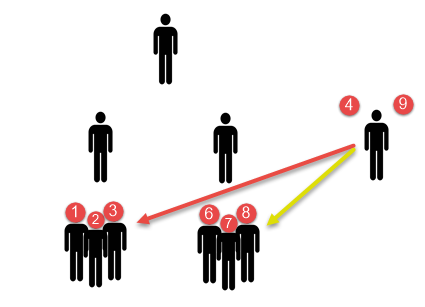

Data Structure
B-Tree
Created by Jongwon
Performance?

Memory Systems
 Central
Processing
Unit
Central
Processing
Unit
Input
/ Output
문제를 푸는 상황과 비교해 봅시다.


ACCESS TIME?
Internal Memory의 Access Time만 해도
Cache Memory의 10배 ~ 100배
Disk는... Internal Memory의 100,000배 ~ 1,000,000배
Caching
데이터가 커서 메모리에 모두 올릴 수가 없다.
그럼 자주 쓰는 것만 올려보자.
LOCALITY

Temporal Locality
|

Spatial Locality
|
메모리는 한정된 공간이라서
안쓰던 영역이 메모리에 올라오는 경우가 있기 마련
그 영역은 자주 쓰일까?
Scheduling
Performance?
Access time 뿐만 아니라
Access 횟수를 줄여보자.
Data Structure
Access를 어떻게 하는가
ADDRESS
first fit, best fit, worst fit
Big-o-notation
특정 시점 이후에는 이 선을 넘을 수 없다
doubly linked list
이전 또는 다음 블록의 주소를 한 노드에 함께 기록
\[ O(n) \]
balanced tree
leaf로 가는 DEPTH가 거의 동일하다.
\[ O(log \ n) \]
Oracle b-tree structure

Scan을 위한 양방향 Linked list 구조의 leaf 노드
B-Tree Operation
- Index Block Creation
- Index Block Split(Data Insert)
- Data Delete, Update
- Selection
Index Block Creation
- 테이블을 액세스 하여 정렬을 수행한다.
- 정렬된 결과를 leaf 블록에 기록한다.
- leaf블록이 차면 branch블록을 만들어 블록 헤더에 주소를 기록하고, 새로 leaf블록을 할당한다.
- 위 작업을 반복하여 branch블록도 차면 새로운 branch블록을 할당한다.
- 이 때 새로운 root블록도 만든다. 이 작업을 반복한다.
Index Block Split

꽉찬 부서 VS 자리가 남았다
Index Block Split

다양한 b-tree index
- Reverse Key Index
- Descending Index